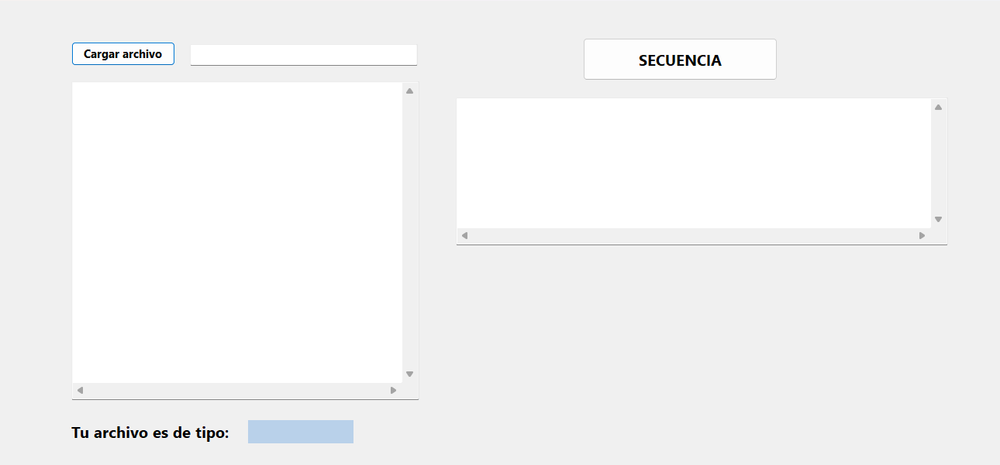
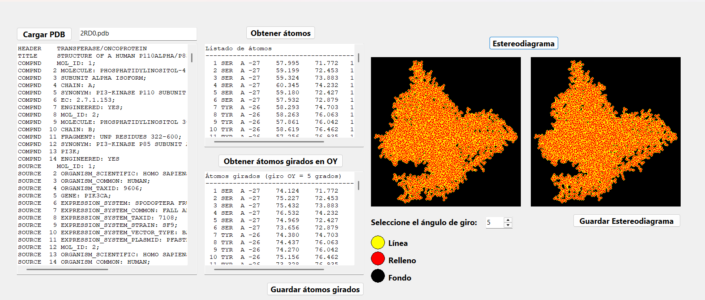
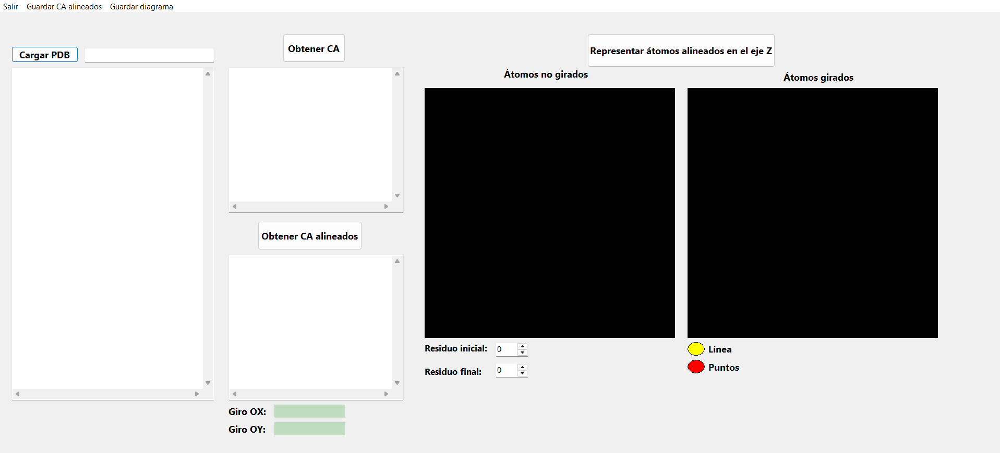
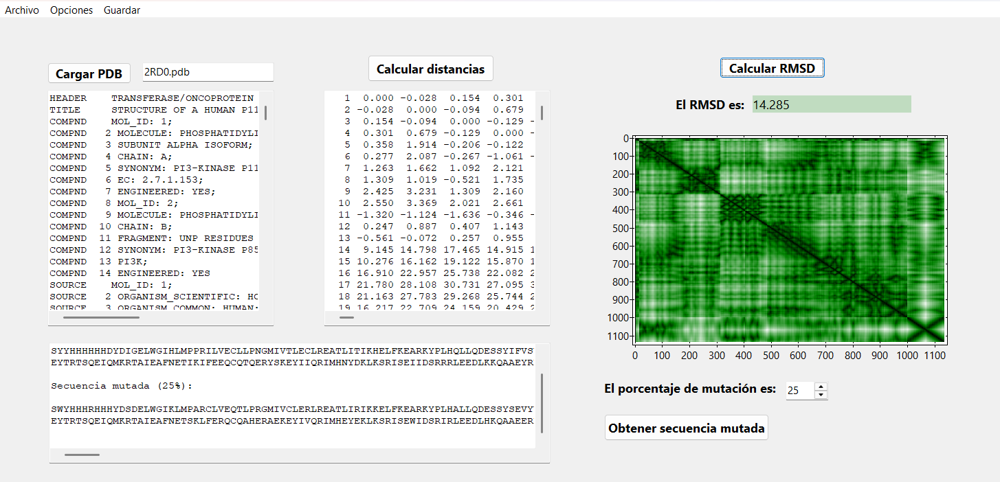
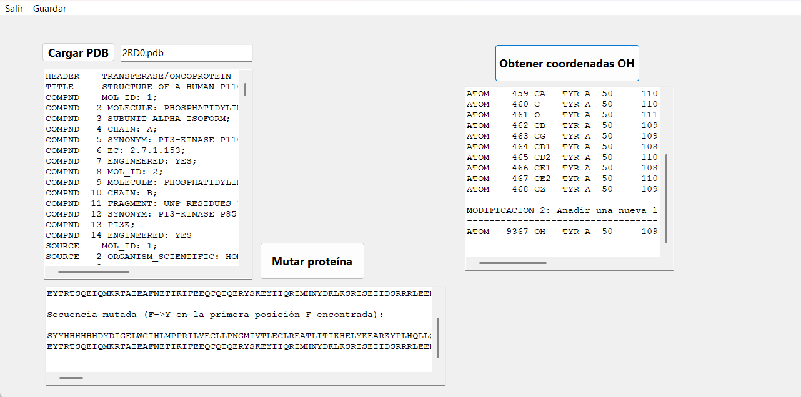
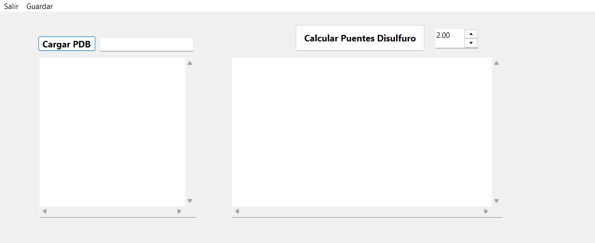
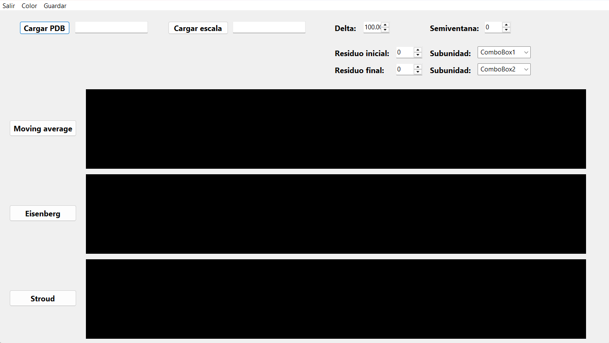

Descripción general
Esta página web recopila de forma unificada las doce actividades desarrolladas para la asignatura Ingeniería de proteínas, implementadas en Lazarus/Free Pascal a partir de ficheros PDB reales de la fosfatidilinositol 3-quinasa (PI3K). Cada apartado incluye una breve explicación del objetivo de la práctica, una captura de la interfaz de la aplicación y enlaces de descarga al ejecutable y al código fuente correspondiente, de modo que las herramientas puedan probarse directamente.
El CPA se apoya en una biblioteca propia de funciones bioinformáticas desarrollada en Lazarus, disponible en el repositorio «Biotools», que reúne todas las rutinas empleadas por los programas de este cuaderno. El estudio estructural se ha centrado principalmente en la estructura cristalográfica 2RD0, correspondiente al complejo p110–p85 de PI3K, utilizada como PDB de referencia en la mayoría de las actividades; según el objetivo de cada ejercicio, también se han empleado otras estructuras PDB a modo de comparación para analizar dominios, ligandos y cambios conformacionales.
El recorrido abarca desde tareas de tratamiento de formatos de secuencia y parsing estructural hasta el análisis de B‑factores, geometría de proteínas, cálculo de RMSD, predicción de enlaces disulfuro y perfiles de hidrofobicidad. Además del cuaderno completo en formato escrito, se ha desarrollado esta página web como recurso complementario para facilitar el acceso y el uso de las distintas actividades por parte de cualquier posible usuario o evaluador.
Biblioteca de funciones: Biotools · PDB principal analizado: 2RD0 (PI3K)Actividad 1 · Revisión de la proteína PI3K
La proteína fosfatidilinositol 3-cinasa (PI3K) es una quinasa de lípidos clave en la vía de señalización PI3K/AKT/mTOR, donde controla procesos como el crecimiento, la supervivencia y el metabolismo celular mediante la generación de PIP3 en la membrana plasmática. En esta actividad se revisa en detalle la familia de isoformas de Clase I (especialmente la subunidad catalítica p110α codificada por el gen PIK3CA), describiendo su organización modular en dominios ABD, RBD, C2, helical y quinasa, así como su ensamblaje funcional con la subunidad reguladora p85. Se resumen también los principales mecanismos de activación por receptores tirosina quinasa, la integración con Ras mediante el dominio RBD y el impacto de mutaciones oncogénicas frecuentes en cáncer de colon (como E542K, E545K y H1047R), que provocan una activación constitutiva de la vía y favorecen la proliferación tumoral y la resistencia a terapias dirigidas.
Actividad 2 · Detección de formatos de archivo
En esta actividad se ha desarrollado una herramienta capaz de leer ficheros descargados de bases de datos biomoleculares y discriminar automáticamente si corresponden a los formatos GenBank, UniProt o PDB, a partir de sus cabeceras y campos característicos. A partir del formato identificado, el programa extrae la secuencia primaria de la proteína y la muestra en código de una letra, lista para ser utilizada en otras actividades del cuaderno o en programas externos de análisis de secuencia. Se trata de una utilidad de preprocesado: el usuario no necesita emplear visores estructurales como Jmol para comprobar resultados, ya que todo el flujo se basa en texto y en la comparación de las secuencias obtenidas con las que figuran en los ficheros originales.
Actividad 3 · CargarPDB y estructura interna TPDB
En esta actividad se ha implementado la función CargarPDB, que lee un fichero PDB de la proteína
y vuelca su contenido en una estructura interna TPDB formada por registros de átomos, residuos
y subunidades. Esta representación matricial organiza de forma eficiente la información de identificadores,
tipos de átomo, coordenadas cristalográficas y relaciones átomo–residuo–cadena, de modo que las actividades
posteriores puedan acceder a estos datos sin volver a parsear el archivo original. El programa muestra un
resumen de la estructura importada (número de átomos, residuos y cadenas) y sirve como base para todas las
herramientas que necesitan manipular geométricamente la proteína, sin requerir visores externos para validar
el parseo más allá de una comprobación puntual si el usuario lo desea.
Actividad 4 · Análisis estructural con visores y bases de datos
En esta actividad se explora la proteína PI3K combinando la información estructural del PDB con distintas bases de datos y visores. A partir del identificador PDB seleccionado, se consultan recursos como PDBsum, CATH o PROSITE para identificar dominios, estructura secundaria y motivos funcionales relevantes, y se visualiza la estructura tridimensional en Jmol/RasMol para generar las figuras que acompañan al informe. El usuario debe apoyarse en estas herramientas externas para comprobar la localización de los dominios descritos, resaltar elementos de estructura secundaria y obtener capturas representativas de la organización de la proteína.

Actividad 5 · Generación de PDB simplificados (CA y B‑factores)
En esta actividad se ha programado la función writePDB, que reconstruye líneas ATOM con el formato
correcto del PDB a partir de la estructura interna TPDB y permite generar ficheros que contienen
únicamente los carbonos alfa de la proteína. Estos PDB simplificados se cargan después en Jmol para representar
el esqueleto de la cadena en modo spacefill y colorearlo según los factores de temperatura (B‑factores),
identificando de forma visual los residuos con mayor movilidad. El uso de Jmol es imprescindible en esta práctica,
ya que la interpretación de los resultados se basa en la comparación entre la estructura coloreada y la localización
espacial de las regiones más flexibles dentro del modelo tridimensional.
Actividad 6 · Ángulos φ/ψ y diagrama de Ramachandran
En esta actividad se han implementado funciones geométricas que calculan distancias interatómicas, ángulos de
enlace y ángulos de torsión a partir de las coordenadas almacenadas en TPDB, lo que permite obtener
los ángulos φ y ψ de cada residuo de la proteína y representar su diagrama de Ramachandran. El programa genera
automáticamente la nube de puntos en el plano φ–ψ para distintos tramos de la secuencia, facilitando la identificación
de regiones compatibles con hélices α, láminas β o conformaciones no permitidas. Para validar los resultados se propone
comparar, al menos en los diez primeros residuos, los valores de torsión calculados con los que ofrece RasMol mediante
la opción set picking torsion u órdenes equivalentes en otros visores moleculares.
Actividad 7 · Transformaciones y estereodiagrama
En esta actividad se han desarrollado funciones biotools de traslación y giro alrededor de los ejes cartesianos que permiten aplicar transformaciones rígidas a cualquier subconjunto de átomos de la proteína. A partir de estas rutinas se construye una aplicación capaz de generar estereodiagramas de fragmentos definidos, produciendo dos vistas ligeramente rotadas que el usuario puede fusionar visualmente para obtener una percepción tridimensional mejorada de la estructura. La corrección de las imágenes se verifica comparando la orientación y separación de los pares estereoscópicos con la función de visión estéreo de RasMol o Jmol, que sirve como referencia externa para ajustar los ángulos de giro y la disposición final de las dos proyecciones.
Actividad 8 · Proyección y rotación de un fragmento CA
En esta actividad se selecciona un fragmento de diez carbonos alfa consecutivos de la proteína y se proyectan sus coordenadas sobre el plano cartesiano, tomando el eje Z como perpendicular al plano de la pantalla. A partir de la posición inicial del primer y del último residuo, el programa deduce el ángulo de giro necesario alrededor de Z para que ambos puntos se superpongan en la nueva proyección, y aplica esa misma transformación a los ocho Cα restantes, recalculando y dibujando sus coordenadas transformadas. El resultado se comprueba visualmente en RasMol u otro visor equivalente, donde se puede verificar que el fragmento rotado presenta la alineación esperada y que la transformación implementada reproduce correctamente el giro calculado matemáticamente.
Actividad 9 · RMSD y estabilidad estructural (AlphaFold2)
En esta actividad se ha implementado una herramienta que genera variantes mutadas de la proteína por diferentes porcentajes de cambio en la secuencia y calcula, para cada modelo, la matriz de distancias entre Cα y el RMSD respecto a la estructura nativa. A partir de estos valores se analiza la estabilidad global del pliegue y se identifica el umbral de mutación a partir del cual la conformación nativa se pierde de forma clara. Como referencia externa se emplean estructuras predichas con AlphaFold2 y alineamientos estructurales obtenidos con herramientas como DALI o US‑align, lo que permite comparar los RMSD internos del programa con alineamientos estándar y apoyar la discusión sobre la robustez estructural de la proteína frente a mutaciones extensas.
Actividad 10 · Mutación Phe→Tyr y edición del PDB
En esta actividad se estudia el efecto de mutar la primera fenilalanina de la proteína a tirosina, calculando explícitamente las coordenadas del nuevo átomo de oxígeno del grupo hidroxilo y añadiendo una línea ATOM extra al fichero PDB original. A partir de tres átomos de referencia del anillo aromático se construye la geometría estándar del enlace C–O y se generan las nuevas coordenadas, que se incorporan al PDB mediante una edición controlada del archivo de texto. La comparación en Jmol o PyMOL de las estructuras nativa y mutante permite evaluar visualmente las posibles colisiones y distorsiones estéricas introducidas en el entorno local del residuo, y discutir hasta qué punto una mutación aparentemente sencilla puede perturbar el ajuste de la cadena lateral en el interior del modelo tridimensional.
Actividad 11 · Predicción de enlaces disulfuro
En esta actividad se ha desarrollado un programa que recorre todas las cisteínas presentes en un PDB, calcula las distancias y parámetros geométricos relevantes entre cada pareja y “predice” qué pares son compatibles con la formación de un enlace disulfuro. A partir de esas predicciones se comparan los resultados con los enlaces reales anotados en los registros SSBOND del propio archivo, clasificando cada caso en aciertos positivos, aciertos negativos, falsos positivos y falsos negativos para una pequeña colección de proteínas de prueba. El objetivo es evaluar de forma cuantitativa el rendimiento del criterio geométrico implementado y comprobar, sobre todo en la proteína PI3K y en otras estructuras de referencia, hasta qué punto es posible recuperar la red de puentes disulfuro reales a partir únicamente de las coordenadas atómicas.
Actividad 12 · Perfiles de hidrofobicidad y momento de Eisenberg
En esta actividad se ha implementado una herramienta que calcula perfiles clásicos de hidrofobicidad a partir de la escala de Kyte–Doolittle mediante una media móvil, y perfiles de anfipatía basados en el momento hidrofóbico de Eisenberg y en un análisis espectral tipo Stroud. El programa permite seleccionar distintos tramos de la secuencia (incluida la proteína PI3K y, opcionalmente, proteínas integrales de membrana) y ajustar parámetros como la longitud de ventana y el ángulo helicoidal, generando tres diagramas comparables en paralelo. A partir de estos perfiles se discute la capacidad de los algoritmos para señalar regiones con tendencia a formar hélices α, dominios anfipáticos y posibles segmentos transmembrana, apoyando la interpretación con la estructura tridimensional conocida o con predicciones de topología obtenidas por herramientas externas cuando es necesario.
